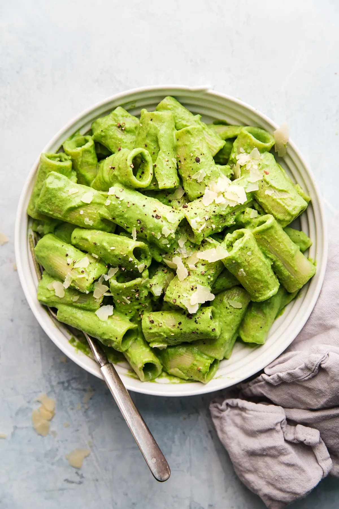
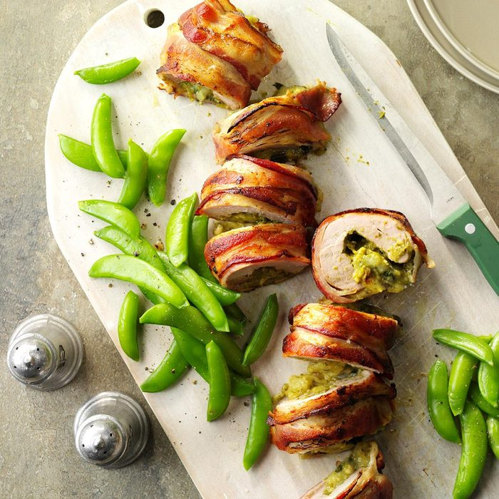
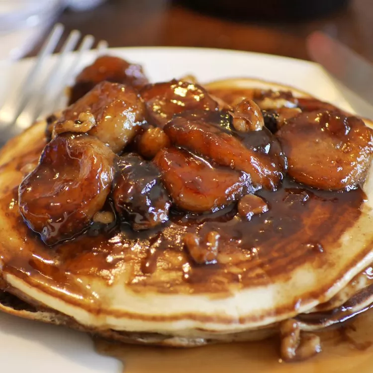

{{ post1.food }} —
{{ post1.difficulty }}
- Total time: 35 mins
{{ post1.message }}
x
{{ post1.food }}
Ingredients:
{{ post1.foodie }}
Prep Instructions:
{{ post1.bio }}
 {{ post2.food }}
{{ post2.food }} —
{{ post2.difficulty }}
- Total time: 25 mins
{{ post2.message }}
x
{{ post2.food }}
Ingredients:
{{ post2.foodie }}
Prep Instructions:
{{ post2.bio }}

{{ post3.food }} —
{{ post3.difficulty }}
- Total time: 50 mins
{{ post3.message }}
x
{{ post3.food }}
Ingredients:
{{ post3.foodie }}
Prep Instructions:
{{ post3.bio }}

{{ post4.food }} —
{{ post4.difficulty }}
- Total time: 20 mins
{{ post4.message }}
x
{{ post4.food }}
Ingredients:
{{ post4.foodie }}
Prep Instructions:
{{ post4.bio }}